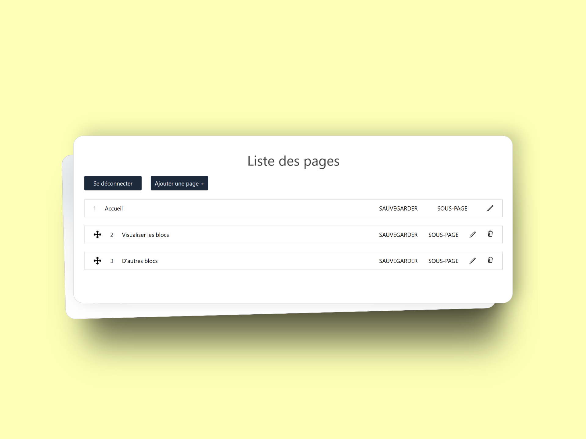
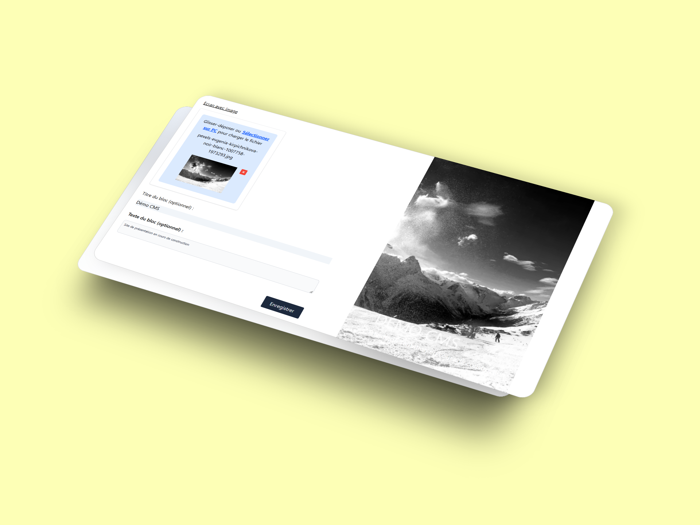
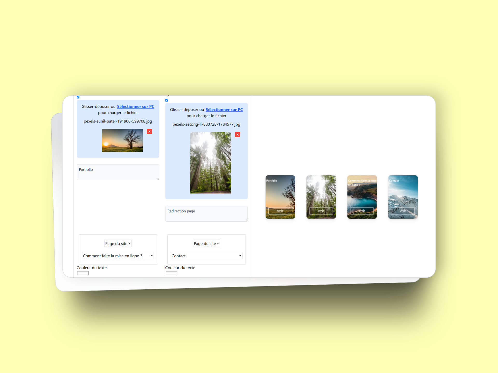

Projets
Voici quelques projets que j'ai réalisés. Vous pouvez les consulter en cliquant sur les liens ci-dessous.
CMS avec visualisation en direct
Lien vers le CMSLes images suivantes permettent d'avoir un aperçu du back-office du CMS.
Le principe du CMS est de permettre à l'utilisateur de voir en direct ce qu'il crée.
Lien vers le projet github
Cliquer ici pour voir le codeLes technologies utilisées pour ce projet sont :
- NextJs : pour le front
- React
- Typescript
- PHP natif pour le BO automatisé
Création de pages :
Création et édition de blocs en direct :
 Voici un petit projet de remise à niveau dans le langage react (que je n'avais pas pratiqué depuis 3 ans) réalisé dans le but de pouvoir réaliser le CMS ci-dessus.
Réalisation d'un mini netflix
Lien vers le siteJ'ai réalisé ce site à l'aide d'un composant carousel que j'ai réalisé moi-même. Le composant se voulait réutilisable.
La technologie utilisée pour ce projet est ReactJS